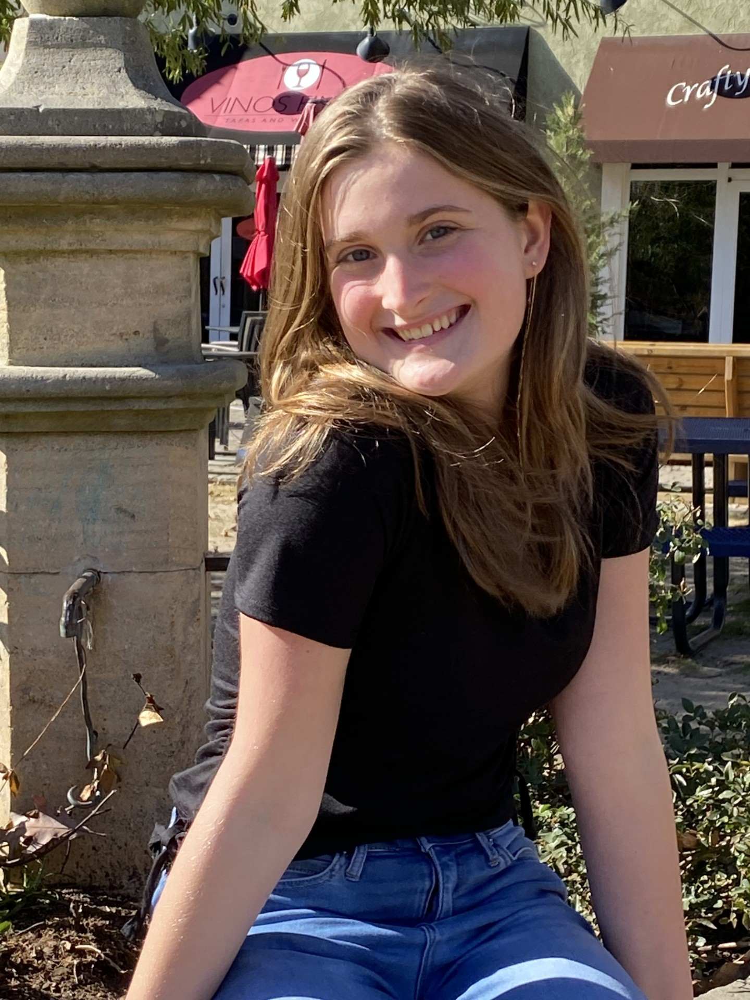

I am an undergraduate at Duke University studying computer science. My passion for software development and working with amazing teams started during my internship at Farragut Systems. I look forward to developing my skills at Duke and future internships.